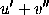

All the characters on the keyboard have their standard meaning in mathematics mode, with the exception of the characters
# $ % & ~ _ ^ \ { } '
Letters are set in italic type. In mathematics mode the character
' has a special meaning: typing $u' + v''$
produces
.
Spaces and single carriage returns in the input file between
letters and other symbols do not have any effect on the typesetting
of mathematical formulae, since LaTeX determines spacing within
formulae by its own internal rules. Thus
$u v + w = x$ and $uv+w=x$ both produce
.
The characters
# $ % & _ { }
are obtained in mathematics mode by typing
\# \$ \% \& \_ \{ \} .
A backslash \ can be obtained in mathematics mode
by typing \backslash.